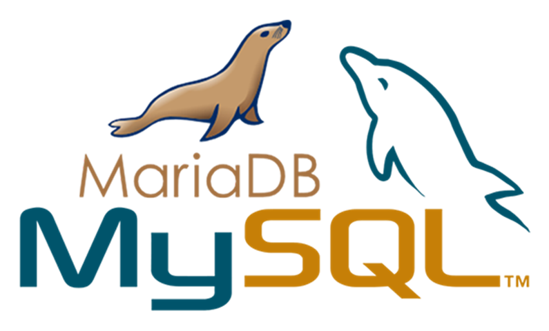

مقدمه
در حوزه پشتیبان گیری از دیتابیس ها به ویژه دیتابیس mysql/mariadb مرسوم ترین و معروف ترین برنامه
پشتیبان گیری، mysqldump می باشد که به شدت در این زمینه قدرتمند و دقیق عمل می کند.
اما این برنامه قدرتمند، روی دیتابیس های بزرگ و حجیم خیلی کند عمل می کند
معرفی برنامه های بکاپ گیری
در حوزه دیتابیس های mysql/mariadb، همانطور که بالاتر هم ذکر شد، از برنامه mysqldump استفاده می شود.
این برنامه به عنوان اصلی ترین و محبوب ترین برنامه پشتیبان گیری برای mysql/mariadb از قدیم
الایام بوده است.
با این برنامه می توان از تمام دیتابیس ها یکجا، از یک دیتابیس یا از بخشی از جدول، جدول یا جداول بکاپ گیری کرد. خروجی این برنامه در عین قدرت بالا، ساده و به صورت فایل متنی sql می باشد.
در کنار این برنامه قدرتمند، برنامه جدیدی به نام MyDumper برای پشتیبان گیری با سرعت بالا
از دیتابیس mysql/mariadb ارائه شده است. این برنامه خود شامل دو برنامه mydumper برای
پشتیبان گیری و myloader برای بازگرداندن پشتیبان ها می شود.
خروجی این برنامه فایل های پشتیبان به صورت باینری هایی فشرده می باشد که توسط برنامه myloader
خودش قابل بازگردانی است.
مزیت های mydumper
- همزمانی پردازش و کارایی بالا
- مدیریت ساده فایل های خروجی (فایل های خروجی جداول به صورت جدا جدا ذخیره می شوند)
- ثبات - حفظ حالت فعلی در سراسر تردهای اجرایی، تامین موقعیت دقیق وضعیت مستر و اسلیو دیتابیس
- قابل مدیریت - پشتیبانی از تعیین دیتابیس و جداولی که باید یا نباید پشتیبان گیری شوند
نصب mydumper
برای استفاده از این برنامه آن را نصب نکردیم، بلکه با اجرا داکر و با کامپوز زیر اجرا شده است:
version: "3"
services:
mydumper:
image: mydumper:v0.15.2-5
volumes:
- /core/db/backup/test/:/backups/
hostname: mydumper
privileged: true
container_name: mydumper
entrypoint: tail
command: -f /dev/null
بعد دستور زیر را اجرا می کنیم:
docker-compose up -d
پشتیبان گیری از دیتابیس ویراستی
از قدیم برای پشتیبان گیری از mysqldump استفاده می شده است که با توجه به حجم فعلی خیلی
بالای برخی دیتابیس ها روی برخی جداول، و نرخ رشد سریع آن پیشنهاد می شود تا به جای
استفاده mysqldump از mydumper استفاده نمود.
نحوه پشتیبان گیری
برای پشتیبان گیری از دیتابیس با دستور زیر می توان پشتیبان گیری را انجام داد:
dex mydumper mydumper --host IPOFDATABASE --user BACKUPUSER --password 'USERPASSWORD' --database microblog --port 3306 --rows 100:100:0 --threads 14 --compress --verbose 3 --no-locks --outputdir '/backups/' --logfile '/backups/backup.log' --chunk-filesize 100
توضیح گزینه ها
گزینه های استفاده شده در این دستور به صورت زیر هستند:
- --host: با این گزینه هاست دیتابیسی که پشتیبانی گیری میشود تعیین می شود
- --user: تعیین کننده نام کاربری ارتباط با دیتابیس
- --password: تعیین کننده کلمه عبور ارتباطی با دیتابیس
- --database: تعیین کننده نام دیتابیس برای پشتیبان گیری
- --port: تعیین کننده شماره پورت ارتباطی با دیتابیس
- --rows: یک جدول را به تعداد این عدد در پشتیبان گیری جدا می کند، مقدار این گزینه به صورت MIN:START_AT:MAX نیز می تواند تعیین شود. Min مشخص کننده حداقل میزان جداسازی است و START_AT مشخص کننده نقطه آغاز است و Max مقدار ۰ مشخص کننده این است که محدودیتی ندارد
- --threads: تعیین کننده تعداد ترد همزمان مورد استفاده از CPU
- --compress: تعیین کننده نحوه فشرده سازی خروجی با gzip یا zstd می باشد
- --verbose: تعیین کننده سطح لاگ برنامه
- --no-locks: در زمان پشتیبان گیری جداول را lock نمی کند
- --outputdir: تعیین کننده مسیر خروجی فایل های پشتیبان است
- --logfile: تعیین کننده مسیر فایل لاگ برنامه است
- --chunk-filesize: تعیین کننده جدا کردن فایل های خروجی جدول به MB می باشد.
نحوه بازگرداندن پشتیبان
برای برگرداند فایل پشتیبان از دستور زیر استفاده می شود:
myloader --host IPOFSETSERVER --user USERNAME --password 'USERPASSWORD' --database microblog --queries-per-transaction 1000 --threads 20 --compress-protocol --verbose 3 --directory '/backups/' --logfile '/backups/backup.log'
توضیح گزینه ها
گزینه های استفاده شده در این دستور به صورت زیر هستند:
- --queries-per-transaction: تعیین کننده تعداد کوئری اجرا شده در هر ترنس اکشن است
- --compress-protocol: فعال کننده فشرده سازی در ارتباطی با دیتابیس
- --directory: تعیین کننده مسیر فایل های پشتیبان دیتابیس